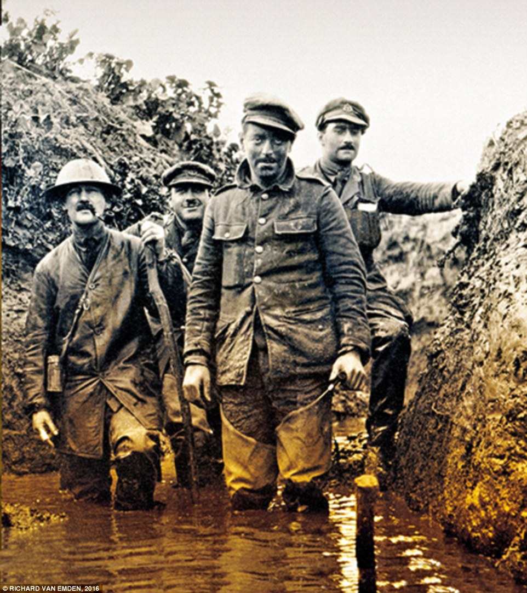
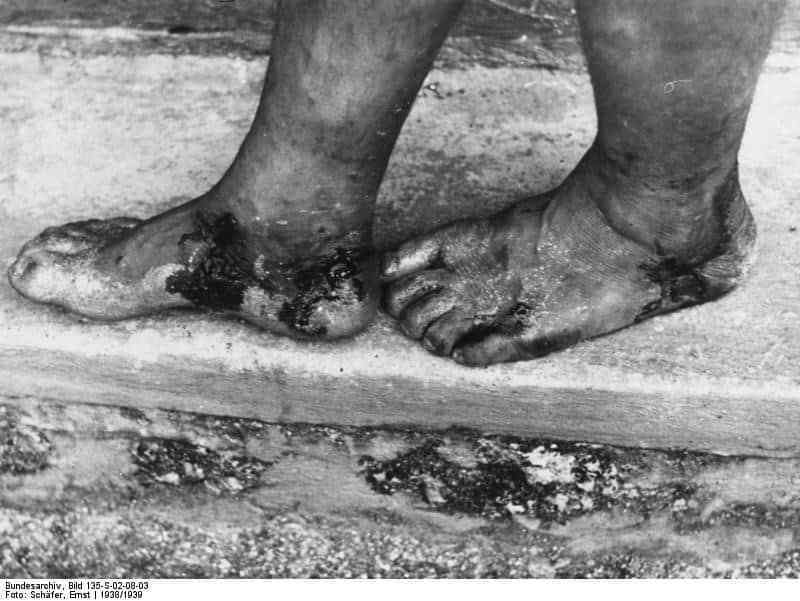

This is a victim of Trench Foot, from which many suffered due to the wet conditions in the trenches. Oftentimes it became so severe that men’s feet had to be amputated.
|
|
 |
| While the poster reinforces a common perception at the time: that war was a quick adventure, and soldiers were happy, clean, well-clothed boys becoming men, the reality was the war lasted 4 long years, and for most of it, the soldiers lived in appalling conditions. Rations could often be of extremely low quality, and limited as supply lines were strained. Soldiers lived in muddy trenches, where they commonly suffered from diseases such as Trench Foot, and had to fight off aggressive rats who had learned to feed off the corpses in no man’s land. | |
|
 This is a victim of Trench Foot, from which many suffered due to the wet conditions in the trenches. Oftentimes it became so severe that men’s feet had to be amputated. |